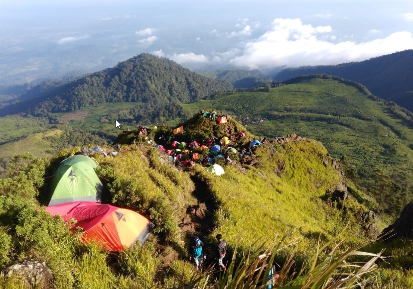

Gunung Ungaran adalah gunung berapi bertipe stratovolcano yang terletak di Ungaran, Kabupaten Semarang, Jawa Tengah dan memiliki ketinggian 2.050 meter. Walaupun tidak ada catatan khusus mengenai aktivitas vulkanologi di gunung ini, tetapi terdapat sumber mata air panas di kaki gunungnya yang mengindikasikan adanya aktivitas panas bumi di bawah tanah. Lokasi sumber mata air panas tersebut terdapat di Candi Gedong Songo dan Gonoharjo, Limbangan, Kendal.
